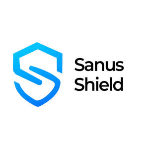

Trade Mark Journal No.2025/042 17 October 2025
UK00004273408 3 October 2025 (5,9,10,30,35,36,37,38,41,42,43,44,45)

- Class 5
- Health food supplements for persons with special dietary requirements; Health food supplements made principally of vitamins; Health food supplements made principally of minerals.
- Class 9
- Health monitoring software; Business technology software; Information technology and audiovisual equipment; Downloadable computer software for blockchain technology; Electronic publications in the field of interactive technology; Information technology and audio-visual, multimedia and photographic devices; Science software; Simulation software for use in digital computers; Augmented reality software for use in mobile devices for integrating electronic data with real world environments; Customer relation management [CRM] software; Cloud server software; AI software; E-commerce software; Digital solutions provider [DSP] software; Application software for cloud computing services; Cloud computing software; Enterprise software; E-commerce and e-payment software; Business intelligence software; Downloadable cloud computing software; Server-side software; Robotic Process Automation [RPA] software; Server software; Mobile software; Dashboard software; Business application software; Business software; Business performance management [BPM] software; Workflow software; Business management software; Social software; CMS software [Content management system]; Web content management [WCM] software; Software; Mobile application software; Application server software; Interactive business software; Web application software; Communications server software; Database management software; Software for the analysis of business data; Digital dashboard software; Big data management software; File management software; Software suites; Application software for social networking services via internet; Application software; Data management software; Software applications; Mobile apps; Application software for mobile phones; Mobile phones; Software for mobile phones; Application software for mobile devices; Computer application software for mobile phones; Downloadable software applications for mobile phones; Downloadable emoticons for mobile phones; Downloadable mobile applications; Downloadable applications for use with mobile devices; Downloadable applications for mobile devices; Electronic game software for mobile phones; Mobile phone chargers; Devices for hands-free use of mobile phones; Downloadable ringtones for mobile phones; Downloadable graphics for mobile phones; Displays for mobile phones; Mobile phone covers; Software applications for use with mobile devices; Software applications for mobile devices; Software and applications for mobile devices; Computer software for mobile phones; Mobile phone straps; Mobile phone cases; Computer application software for mobile telephones; Smartphone software; Smartphone software applications, downloadable; Application software for smart phones; Downloadable smart phone applications (software); Mobile data apparatus; Downloadable mobile applications for the management of information; Mobile app's; Computer e-commerce software; Retail software; Software for the processing of business transactions; Web development software; Computer e-commerce software to allow users to perform electronic business transactions via a global computer network; Software for operating an online shop; Software for arranging online transactions; Computer software designed to estimate costs.
- Class 10
- Health trusses.
- Class 30
- Dental health gum [other than medicated].
- Class 35
- Health care cost management; Administrative management of health care clinics; Management of health care clinics for others; Health care cost review; Administrative services relating to dental health insurance; Administration of prepaid health care plans; Negotiation of contracts with health care payors; Compilation of statistics relating to health care utilization; Advice relating to the business management of health clubs; Business consulting; Marketing consulting; Business research consulting; Business management and consulting; Business management consulting; Business consulting services; Professional business consulting; Business management and consulting services; Business management consulting services; Business relocation consulting; Business marketing consulting services; Business organization consulting; Business organisation consulting; Personnel management consulting; Acquisitions (Business -) consulting services; Consulting services relating to marketing; Business organization and management consulting; Consulting services in business organization and management; Business organisation and management consulting; Business organisation and management consulting services; Business process management and consulting; Business consulting for enterprises; Career placement consulting services; Business management consultancy and advisory services; Consultancy and advisory services for business management; Business consultancy and advisory services; Business advisory and consultancy services; Direct marketing consulting; Tax preparation and consulting services; Business planning consultancy; Consultancy and advisory services relating to business management; Consulting services in the field of Internet marketing; Business consultancy; Consultancy and advisory services in the field of business strategy; Assistance, advisory services and consultancy with regard to business planning; Business management and consultancy; Business management consultancy; Assistance, advisory services and consultancy with regard to business management; Consultancy (Professional business -); Professional business consultancy; Business consultancy (Professional -); Management consultancy services; Business management and consultancy services; Business management consultancy services; Business management consulting services in the field of information technology; Marketing consultancy; Career planning consultancy; Professional business consultancy services; Professional consultancy relating to business management; Business consulting services in the agriculture field; Business consultancy services; Consulting services relating to publicity; Assistance, advisory services and consultancy with regard to business analysis; Corporate management consultancy services; Professional consultancy relating to marketing; Business planning and business continuity consulting; Strategic business consultancy; Assistance, advisory services and consultancy with regard to business organization; Business consulting services for digital transformation; Business consultancy to firms; Business management and organization consultancy services; Corporate management consultancy; Consultancy relating to business planning; Consultancy relating to business management; Business marketing consultancy; Personal management consultancy services; Business management and organization consultancy; Consultancy and advisory services relating to personnel management; Consulting services in the field of development of advertising concepts; Business administration consultancy; Advisory and consultancy services relating to import-export agencies; Business management and organisation consultancy services; Employment consultancy; Business advice and consultancy relating to franchising; Business recruitment consultancy; Business organization consultancy; Consultancy relating to auditing; Business appraisal consultancy; Personnel management consultancy services; Business advice relating to marketing management consultations; Business process management consultancy; Consultancy relating to business analysis; Employment consultancy services; Retail services in relation to information technology equipment; Wholesale services in relation to information technology equipment; Business consultancy relating to the administration of information technology; Consultancy regarding public relations communications strategy; Business management of insurance agencies and brokers on an outsourcing basis; Administration of employee benefit plans; Consultancy services regarding business strategies; Business management and enterprise organization consultancy; Business management consultancy, also via the Internet; Business management consultancy via the Internet; Advertising services for the promotion of e-commerce; Advertising of business web sites; Business marketing services; Outsourcing services in the field of business analytics; Online business networking services; On-line advertising and marketing services; Business invoicing services; Internet marketing; Digital marketing; Business consultancy services for digital transformation; Business marketing consultation services; Influencer marketing; Business strategy services; Consultancy services in the field of affiliate marketing; Business strategy development services; Marketing services; Business management services relating to electronic commerce; Retail services for computer software; Business brokerage services; Business intermediary services relating to the matching of potential private investors with entrepreneurs needing funding; Efficiency (Business -) expert services; Providing consumer product advice relating to software; Providing business management start-up support for other businesses; Support for employees with regard to business matters.
- Class 36
- Insurance; Insurance underwriting; Underwriting (Insurance -); Insurance subrogation; Health insurance; Health insurance underwriting; Insurance underwriting in the field of professional liability insurance; Accident insurance underwriting; Medical insurance; Insurance broking; Insurance brokerage; Brokerage (Insurance -); Brokerage of insurance; Medical insurance underwriting; Accident insurance; Casualty insurance underwriting; Non-life insurance underwriting; Provision of insurance services to insurance companies; Accident insurance underwriting services; Travel insurance; Automobile accident insurance underwriting; Insurance services; Brokerage of non-life insurance; Property insurance underwriting; Insurance underwriting services; Underwriting of insurance (Services for the -); Underwriting of health insurance (Services for the -); Life insurance underwriting; Credit insurance; Transit insurance underwriting; Insurance actuarial services; Arranging for financing of insurance premiums; Insurance for businesses; Insurance agencies; Motor insurance; Underwriting insurance for pre-paid health care; Brokerage of casualty insurance; Life insurance; Professional indemnity insurance; Insurance consultancy; Insurance underwriting consultancy; Life insurance brokerage; Insurance for vans; Insurance guarantees; Private health insurance; Insurance underwriting and appraisals and assessment for insurance purposes; Insurance brokering; Insurance brokers (Services of -); Credit services for the payment of insurance premiums; Credit services for payment of insurance premiums; Insurance for offices; Guarantee insurance; Underwriting of company insurance (Services for the -); Insurance administration; Dental health insurance underwriting and administration; Vehicle insurance services; Insurance information; Information (Insurance -); Dental insurance services; Underwriting of personal accident insurance (Services for the -); Insurance for hotels; Motor insurance brokerage; Insurance consultation; Underwriting of credit insurance (Services for the -); Transport insurance brokerage; Insurance advice; Consultations [insurance]; Life insurance agencies; Insurance research; Research (Insurance -); Insurance brokerage services; Commodities insurance; Fire insurance; Warranty insurance services; Underwriting of business insurance (Services for the -); Arranging of insurance; Arranging insurance; Insurance (Arranging of -); Insurance agency and brokerage; Travel insurance services; Insurance of buildings; Transit insurance brokerage; Insurance investigations; Insurance brokerage for property; Studies (Insurance -); Insurance for legal expenses; Legal expenses insurance; Insurance services for the protection of mortgages; Underwriting insurance for pre-paid legal services; Insurance agency services; Provision of insurance services to reinsurance companies; Dental health insurance administration; Claims adjustment for non-life insurance; Insurance premium financing services; Credit risk insurance; Claim adjustment for non-life insurance; Insurance services for the protection of drivers; Home insurance services; Endowment insurance services; Guarantee insurance services; Service insurance contracts; Underwriting relating to transport insurance; Insurance claim assessments; Claim assessments (Insurance -); Administration of insurance claims; Insurance claims administration; Personal insurance services; Insurance claims assessment; Arranging of credit insurance; Settlement of insurance claims; Insurance of anti-theft systems; Claims adjustment (Insurance -); Insurance claims adjustment; Insurance claims adjustment services; Underwriting relating to marine insurance; Insurance management services; Motor vehicle insurance services; Administration of insurance plans; Insurance plans (Administration of -); Fire insurance valuations; Arranging of life insurance; Administration of insurance business; Insurance risk management; Insurance advisory services; Arranging of travel insurance; Insurance information and consultancy; Insurance arranging services; Administration of insurance portfolios; Insurance services for the repayment of medical expense; Insurance brokerage relating to pets; Insurance claim settlements; Home contents insurance; Insurance consultation services; Variable insurance investment services; Provision of finance for health care; Administration of pre-paid health care plans; Savings schemes relating to health care; Savings schemes relating to health insurance; Health insurances services relating to coach drivers; Health insurances services relating to coach couriers; Savings schemes relating to health; Consultancy and brokerage services relating to health insurance; Financial consulting; Actuarial consulting and advisory services; Financial consulting and advisory services; Financial consulting services; Investment banking consulting and advisory services; Consulting services relating to corporate finance; Financial consultancy and insurance consultancy; Financial advisory and consultancy services; Financial consultancy and advisory services; Financial advice and consultancy services; Political fundraising consulting; Financial consultancy; Consultancy (Financial -); Financial strategy consultancy services; Investment consultancy; Financial consultancy services; Capital investment consulting; Professional consultancy relating to finance; Providing funding for the development of new technology; Electronic funds transfer provided via blockchain technology; Provision of ten year insurance policies; Administration of group insurance plans; Foreign monetary exchange advisory services; Administration of insurance claims adjustment; Provision of financial protection against foreign exchange risks; Insurance administration of prescription drug benefit plans; Administration of group insurance; Provision of insurance information; Financial evaluation for insurance purposes; Financial administration of a private dental plan; Evaluation for insurance purposes; Underwriting in foreign exchange (Services for the -); Monetary affairs services; Advisory services relating to insurance claims; Administration of financial affairs; Financial administration of employee pension plans; Consulting and information concerning insurance; Personal equity plan management; Insurance claims adjustment and settlement services; Claims adjustment in the field of insurance; Warranty claims administration services; Insurance services relating to credit agreements; Estimates for insurance purposes; Provision of investment information; Financial valuation, adjustment and settlement services relating to insurance claims; Providing information in insurance matters; Advisory services relating to insurance contracts; Appraisals for insurance purposes; Provision of information relating to insurance; Provision of information relating to insurance and financial services; Provision of equipment guarantee insurance; Insurance services relating to legal costs; Insurance services relating to contingency planning; Brokerage advisory services relating to insurance; Banking insurance; Household insurance services; Insurance services relating to life; Fire insurance underwriting; Insurance loss assessment; Medical insurance services provided to companies; Online business banking services; Online banking; Online banking services; Financing services relating to maternity care; Financial advisory services for companies; Reinsurance brokerage; Mortgage brokerage services; Business brokerage; E-wallet payment services; Providing of banking services; Evaluation (Financial -) [insurance, banking, real estate]; Financial evaluation [insurance, banking, real estate]; Insurance premium rate computing; Insurance services for the construction industry; Insurance services relating to mail order businesses; Motor mechanical breakdown insurance warranty services; Providing information relating to insurance premium rate computing; Check payment guarantee services; Auto financing services; Providing financing to emerging and start-up companies; Financial services relating to the insurance of motor vehicles; Medical insurance brokerage services.
- Class 37
- Care of fur (Services for the -); Fur care and repair; Fur care, cleaning and repair; Fur cleaning, care and repair.
- Class 38
- Telecommunications consultancy; Communications consultancy; Professional consultancy relating to telecommunications; Telecommunications consultancy services; Consulting services in the field of electronic communications.
- Class 41
- Health education; Health and wellness training; Physical health education; Health club services [health and fitness training]; Health and fitness training; Education in the field of occupational health and safety; Health and fitness club services; Health club [fitness] services; Provision of educational health and fitness information; Health club services; Education services relating to health; Providing of training in the field of health care and nutrition; Health club services [exercise]; Education and training in the field of occupational health and safety; Education and training services in the field of occupational health and safety; Training services relating to health and safety; Training services relating to occupational health; Provision of health club [physical exercise] facilities; Physical fitness education services; Provision of educational services relating to health; Providing health club and gymnasium services; Education services relating to physical fitness; Vocational education relating to avoidance of health related problems; Medical education services; Education services relating to nutrition; Business training consultancy services; Management training consultancy services; Training consultancy; Consultancy services relating to engineering training; Training services relating to management consultancy; Consulting services in the field of culinary competitions; Courses for the development of consulting skills; Teaching and training in business, industry and information technology; Education services relating to food technology; Training services relating to the use of information technology; Technological education services; Educational services providing instruction in land policy.
- Class 42
- Design of health care buildings; Software consulting services; Computer consulting services; Information technology consulting; Computer software consulting services; Computer consultancy and advisory services; Information technology consulting services; Technical advice and consultancy services in the field of telecommunications; Technical planning and consulting in the field of light engineering; Consulting services in the field of software as a service [SaaS]; Professional consulting services and advice about agricultural chemistry; Computer software consulting; Control technology consulting services; Consulting services relating to computer software; Software consultancy services; Technical consulting in the field of environmental engineering; Telecommunications engineering consultancy; Computer consultancy services; Professional consultancy relating to technology; Science and technology services; Computer technology consultancy; Design and development of medical technology; Engineering services in the field of energy technology; Research in the field of telecommunications technology; Design and development of computer software for use with medical technology; Research in the field of communications technology; Providing science technology information; Information technology consultancy; Information technology services; Computer and information technology consultancy services; Development of new technology for others; Information technology [IT] consultancy; Design and development of new technology for others; Research relating to technology; Development of technologies for the protection of electronic networks; Research in the field of artificial intelligence technology; Information technology [IT] consulting services; Consultancy and information services in the field of information technology architecture and infrastructure; Technological design services; Information technology support services; Technology consultation in the field of artificial intelligence; Design services relating to process systems for the biotechnology industry; Information technology [IT] support services [troubleshooting of software]; User authentication services using blockchain technology; Consultancy and information services in the field of information technology; Research in the field of technology provided by engineers; Technical consultancy regarding the field of road cutting technology; Technological consulting services in the field of alternative energy generation; Design and development of computer hardware for the manufacturing industry; Design and development of computer hardware for the manufacturing industries; Safety technology services relating to land vehicles; Consultancy and information services relating to information technology architecture and infrastructure; Consultancy services relating to information technology; Technological consulting services for digital transformation; Technological consultancy services for digital transformation; Technological services; Professional consultancy relating to marine technology; Technical consultancy services relating to information technology; Technical advice and consultancy services in the field of information technology; Technological research services; Design and development of telecommunications systems; Expert reporting services relating to technology; Consultancy in the field of technological design; Providing information about the design and development of computer software, systems and networks; Providing user authentication services using biometric hardware and software technology for e-commerce transactions; Consultancy services in the field of technological development; Design of computer hardware for the manufacturing industries; Design and development of software in the field of mobile applications; Technological research for the building construction industry; Providing technological information about environmentally-conscious and green innovations; Design and development of electronic data security systems; Professional advisory services relating to food technology; Services for the industrial design of computers; Design and development of computer software for logistics; Scientific and technological design; Design and development of operating software for cloud computing networks; Technological services relating to computers; Design and development of regenerative energy generation systems; Technological consultancy; Assessment in the field of technology provided by engineers; Scientific and technological services; Scientific technological services; Development of software for communication systems; Development and testing of computing methods, algorithms and software; Engineering services relating to the design of electronic systems; Engineering services relating to the design of communications systems; Technological services relating to design; Providing information about the design and development of computer hardware and software; Technological engineering analysis; Providing information in the field of information technology; Software engineering services; Services for the design of electronic data processing software; Technological research relating to computers; Technological advisory services relating to machine engineering analysis; Technological research; Services for the design of computer systems; Development of computer software application solutions; Research, development, design and upgrading of computer software; Computer software design services; Services for the design of computer software; Provision of computer security risk management programs; Software as a service [SaaS]; Software as a service [SAAS] services; Platforms for gaming as software as a service [SaaS]; Platforms for artificial intelligence as software as a service [SaaS]; Platforms for graphic design as software as a service [SaaS]; Software as a service [SaaS] featuring software for deep learning; Software as a service [SaaS] featuring software for machine learning; Software as a service [SaaS] featuring computer software platforms for artificial intelligence; Software as a service [SaaS] featuring software platforms for electronic gaming; Platform as a Service [PaaS]; Platform as a service [PaaS]; Infrastructure as a Service [IaaS]; Software as a service [SaaS] services featuring software for machine learning, deep learning and deep neural networks; Software as a service; Application service provider [ASP], namely, hosting computer software applications of others; Application service provider (ASP) services, namely, hosting computer software applications of others; Cloud computing services; Hosting services, software as a service, and rental of software; Computer and software consultancy services; Programming of software for e-commerce platforms; Computer software consultancy services; Software customisation services; Cloud-based data protection services ; Cloud hosting provider services; Software development services; Consultancy (Computer software -); Development services relating to computer software application solutions; Computer software consultancy; Consultancy services relating to software used in the field of e-commerce; Development of computer software for logistics, supply chain management and e-business portals; Computing consultancy; Design and development of computer software for logistics, supply chain management and e-business portals; Software authoring; IT services; Designing of child care facilities; Blockchain as a Service [BaaS]; Rental of science and technology equipment.
- Class 43
- Consulting services in the field of culinary arts; Respite care services in the nature of adult day care; Child care services; Child care centers; Provision of before-school care; Provision of after-school care; Providing child care centers; Day care centers.
- Class 44
- Health care; Health care in the nature of health maintenance organizations; Mental health services; Health counseling; Health care relating to naturopathy; Public health counseling; Health counselling; Mental health screening services; Health farm services [medical]; Health care relating to hydrotherapy; Health care relating to fasting; Health screening; Health care relating to acupuncture; Medical health assessment services; Health care relating to homeopathy; Home health care services; Health centers; Health consultancy; Health care relating to osteopathy; Health centres; Health clinic services [medical]; Health care consultancy services [medical]; Health clinic services; Occupational health consultancy; Provision of health care services; Health spa services; Consultancy relating to health care; Health assessment services; Health resort services [medical]; Health care services for treating Alzheimer's disease; Health care relating to chiropraxis; Managed health care services; Health screening services; Personality testing [mental health services]; Rental of medical and health care equipment; Advisory services relating to health care; Health care relating to relaxation therapy; Health center services; Health hydro services; Health screening services in the field of asthma; Health care relating to therapeutic massage; Professional consultancy relating to health care; Consulting services relating to health care; Providing mental health rehabilitation facilities; Health centre services; Health risk assessment; Health care relating to remedial exercise; Consultancy services relating to health care; Information services relating to health care; Personality assessment services [mental health services]; Provision of health information; Provision of health care services in domestic homes; Health care services offered through a network of health care providers on a contract basis; Medical care; Advice relating to the personal welfare of elderly people [health]; Cosmetic body care services provided by health spas; Healthcare; Health care services for assisting individuals to stop smoking; Beauty care services provided by a health spa; Advisory services relating to health; Health assessment surveys; Medical and healthcare services; Health-care; Providing health information; Medical and healthcare clinics; Health screening services in the field of sleep apnea; Medical care services; Medical and health services relating to DNA, genetics and genetic testing; Health risk assessment surveys; Health advice and information services; Preparation of reports relating to health care matters; Professional consultancy relating to health; Information relating to health; Medical treatment services provided by a health spa; Human healthcare services; Human hygiene and beauty care; Technical consultancy services relating to medical health; Animal healthcare services; Medical screening services relating to cardiovascular disease; Providing health care information by telephone; Psychological care; Health-care services; Providing health care information via a global computer network ; Exercise facilities for health rehabilitation purposes (Provision of -); Healthcare services; Nursing care services; Cosmetic body care services; Medical consultancy services; Healthcare consultancy services; Palliative care; Nursing care; Beauty care; Services for the care of the skin; Nursing care (Provision of -); Provision of nursing care; Home-visit nursing care; Postnatal care services; Services for the care of the face; Medical care of feet; Respite care (provision of); Ambulant medical care; Outpatient and inpatient care services; Medical clinic day care services for sick children; Services for the provision of medical care information; Medical care and analysis services relating to patient treatment; Respite care services in the nature of home nursing aid; Respite care services in the nature of nursing aid services; Providing long-term care facilities; Mobile dental care services; Consultation services relating to skin care; Consultation services relating to beauty care; Rental of equipment for human healthcare.
- Class 45
- Health and safety risk management; Health and safety risk assessment services; Fraud detection services in the field of health care insurance; Consultancy services relating to health and safety; Information services relating to health and safety; Litigation consultancy; Legal consultancy services; Licensing of technology; Reviewing standards and practices to assure compliance with laws and regulations; Provision of legal research; Consultation in relation to data protection compliance; Legal services relating to social insurance claims; Provision of expert legal opinions; Information, advisory and consultancy services relating to legal matters; Foster care; Providing patient advocate services to hospital patients and patients in long term care facilities; Providing non-medical in-home care services for individuals.
Sanus Shield Ltd